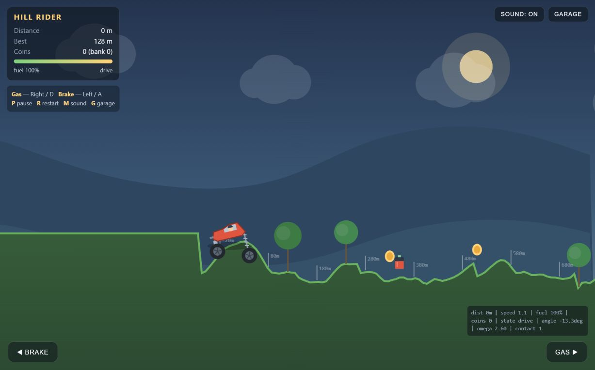

Qwen3.8-Flash-Next IQ2_XS · RTX 4090 24 ГБ · 64 ГБ RAM · 16 vCPU · SSD · контекст 64К
▶ Проверить прототип · Скачать игру ZIP · Все метрики · Задание модели
Около 16 секунд старта и работы подвески. Газ нажимался кратко, без удержания; это не полноценный заезд. Запись около 3 кадров/с — ограничение захвата, а не FPS игры.
Неудачный прототип: цель по качеству игры не достигнута. Код запускается и отдельные механики работают, но физика и ощущения от игры не соответствуют задаче. Заказчик результат не принял.
| Запуск и отрисовка | Проверено в браузере: игра открывается, белого экрана нет, ошибок JS не обнаружено. |
| Движение, монеты, топливо | В 120-секундном тесте: 1429 м, 7 монет, подбор канистр; к концу теста топливо закончилось и наступил game over. |
| Поворот кузова и подвеска | Угол меняется, NaN исправлен. Кузов часто неестественно наклонён, движения пружинистые. Ощущения оригинала не достигнуты. |
| Пауза, гараж, рестарт | Меню и пауза проверены в браузере; рестарт сбрасывает дистанцию и топливо, сохраняет рекорд. |
| Сохранение | В Node VM подтверждена запись рекорда и 7 монет в localStorage. Покупка апгрейдов и сохранение после перезапуска браузера отдельно не проверены. |
| Контент | Одна машина, один процедурный пейзаж, гараж с 3 улучшениями, звук и экранные педали. Мобильное управление и переворот не прошли отдельный полноценный тест. |

Пустая папка; весь код игры написал Qwen. Координатор предоставил инструменты записи и чтения файлов, синтаксическую проверку и обратную связь из реального браузера. Длительные поездки отдельно проверялись исполнением неизменённого кода в Node VM с имитацией DOM и нажатий. Этот тест не заменяет проверку отрисовки. Запросы шли в Strata на арендованном сервере; файлы и журнал сохранялись сразу на ПК. Бюджет: до часа аренды и до 110 ₽. Это один практический прогон, а не универсальная оценка интеллекта модели.
Ответов: 80; выходных токенов: 37,449; входных, с повторами: 2,700,168, из них закэшировано 2,640,287. Скорость генерации отделена от времени браузерных проверок, установки и скачивания. Настройки: temperature 0.7, reasoning none, MTP draft 4, без экспериментального speed projection. Принято draft-токенов: 84.9%.
Подготовка сервера, сборка и скачивание: 19.3 мин. Первая попытка reasoning medium: 16,000 выходных токенов и 107.7 с в зафиксированных ответах, без созданных файлов. Следующий запрос был прерван на клиенте; его полный расход сюда не включён. Затем запущена новая попытка reasoning none. При приближении истории к 64К сервер вернул HTTP 400: запускатель уменьшил резерв ответа с 16000 до 8192 токенов и продолжил. Это ошибка управления контекстом в тестовой обвязке, не доказательство слабости модели.
Аренда ВМ — около 39 минут, после чего она удалена. Подтверждённые списания: 59,87 ₽; последний период диска не включён. Тариф: 97,21 ₽/час с SSD и IP. Удаление оставшегося SSD передано владельцу.
Исходники Strata · commit 30ec18ec7094550fcc594fd948220d511d80464e
1 октября 2026 · результаты относятся к этому заданию и конфигурации.